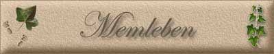

|
||
|
|

Memleben liegt im südlichen Zipfel von Sachsen Anhalt, direkt an der Grenze zu Thüringen im Tal der Unstrut. Es gehört zum 1993 gebildeten größten sachsen-anhaltinischen Landkreis, dem Burgenlandkreis. In Memleben findet man, neben einer herrlichen Landschaft mit ausgedehnten Flussniederungen und bewaldeten Hängen, Zeugnisse alter deutscher Geschichte. Zwischen 830 und 850 wurde Memleben als "Mimeleba" erstmals urkundlich erwähnt, und zwar im Güterverzeichnis der Abtei Hersfeld. Seine Bedeutung erlangte Memleben durch die sächsischen Kaiser Heinrich I. und Otto I. Heinrich I. (Herzog 912, König 919) starb nämlich am 2.7.936 in Memleben. Er hielt sich sehr gern in Memleben und seiner Umgebung auf, denn hier konnte er jagen, die Natur genießen und sich von seinen Schlachten erholen. Kaiser Heinrich I. besaß ein Familiengut, ein "Schloss", in Memleben. Sein
Sohn, Otto I.,(*912 -+ 973 [König und Kaiser])
starb ebenfalls in Memleben, und zwar am 7.Mai 973. Otto I. wurde auch
Otto der Große genannt, denn er hatte sich durch seine siegreichen
Schlachten gegen die Ungarn, Dänen und andere Nationen viel Ruhm erworben.
Er kam von einer Reise aus Italien in sein geliebtes Memleben und wollte
hier für ein paar Tage zur Erholung bleiben. Doch daraus wurde eine
immerwährende Ruhe. Seine Leichnam wurde in Magdeburg beigesetzt, aber
sein Herz ist in Memleben geblieben. Der Sage nach wurde es aus dem toten
Körper entnommen und in Memleben beerdigt. Otto II. schenkte Memleben mehrere Ortschaften, die nicht nur an Saale und Unstrut lagen, sondern auch im Brandenburgischen zu finden waren. Die bedeutendsten Zeit erlangte Memleben unter Otto III. (*980 - + 1002) 994 verlieh er dem Kloster in Memleben das Markt- , Münz- und Zollrecht. (Otto III. starb 22 jährig in Italien und wurde in Aachen begraben). 1015 endete die Blütezeit. Heinrich II, Nachfolger von Otto III., entrechtete das Kloster wieder und unterstellte es dem Kloster in Hersfeld. Der Grund dafür war ein zweifacher: Das Kloster war wirtschaftlich verkommen und die Mönche führten ein sittenloses Leben. 1548 wurde das Kloster dann nach zunehmendem Niedergang endgültig aufgehoben. 1551 wurde es der Landesschule Pforta, die gerade neu gegründet worden war, geschenkt. Sie behielt es bis zum Ende des II. Weltkrieges. 1641 plünderten die Franzosen in Memleben, dadurch starben 164 Menschen. 1722 zerstört ein Blitz das Kirchendach der alten Klosterkirche. Jahre später wird damit begonnen, die Kirche abzubrechen. Heute sind die Überreste dieser Kirche noch zu sehen und einen Besuch wert. 1936 feierte Memleben unter den Nazis die tausendjährige Geschichte in Erinnerung an den 1000. Todestag von Heinrich I. 1986 feierte Memleben sein 1200. Geburtstag. Heute hat Memleben ca. 800 Einwohner. Es gehört zum Burgenlandkreis, dem größten Landkreis in Sachsen-Anhalt.
|
|